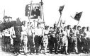

Страницы авторов "Тёмного леса"
Страница журнала "Литературный Кисловодск"
Пишите нам! temnyjles@narod.ru
В N37 "Литературной газеты" за 12 сентября был опубликован ответ министра обороны СССР Д. Язова на запрос группы народных депутатов РСФСР, в котором они просили министра дать разъяснения новочеркасских событий 1962 года. Министр обороны оправдывает действия войск, приведших к многочисленным человеческим жертвам, тем, что противостояли они прежде всего "хулиганствующим элементам".
Вслед за этим ответом в редакцию пришло письмо очевидца событий, члена Всесоюзной писательской ассоциации "Апрель" Ст. Подольского, в котором опровергается мнение министра.
"Литгазета" одной из первых подробно рассказала о новочеркасских событиях и роли, которую сыграл в них генерал-лейтенант М.К. Шапошников, отказавшийся отдавать приказ о расстреле рабочих.
Его свидетельство и свидетельство Ст. Подольского, материалы, собранные Петром Сиудой, чья жизнь трагически оборвалась нынешней весной, обязывают - и мы убеждены в этом - прокуратуру СССР вернуться к тем событиям. И назвать виновных. И реабилитировать безвинных.
2 июня я проснулся часов в семь и, выглянув в окно пятого этажа общежития, увидел на спуске к Хотунку (это район города Новочеркасска с товарной станцией) цепь солдат. Снизу от моста через речку Тузлов поднималась густая толпа, даже колонна людей. Солдаты вынуждены были расступиться, так как люди шли буквально на таран, взявшись за руки...
В 1962 году я был студентом Новочеркасского политехнического института, обитал в общежитии, учился средне, кое-как существовал - перебивался с хлеба на квас. В мае мне исполнилось 22.
Согласно народной историографии, это было время "закручивания гаек". Подопустевшие было лагеря вновь наполнялись заключенными. Период относительной гласности миновал. Завершилась очередная перестройка органов управления. В небе давно уже пикал первый советский спутник, гремело повсюду имя первого космонавта Юрия Гагарина. На высшем уровне, следовательно, всё было в порядке. Внизу же... Поля залила кукуруза. Отношения с Китаем накалились. В центре и на местах боролись с абстракционизмом, другими словами, с работниками культуры: поэтов, художников, музыкантов - всех поучал, журил и наставлял политик, где при помощи кулака, где - бульдозера, где - подачками, как водится. Коммунизм был "не за горами".
Назревало и разразилось повышение цен на мясомолочные продукты. Студентов это не слишком волновало: в магазинах Новочеркасска все равно никаких таких продуктов давно уже не было. Выручали молодость и родительские дотации, которые традиционно шли в "общий котел".
Другое дело - трудящиеся городских предприятий, в том числе рабочие. В городе, особенно в заречной его части, много заводов: крупнейший электровозостроительный - НЭВЗ, электродный, химический, машиностроительный - многотысячные рабочие коллективы, те, чьими руками создается всё в стране, как любили повторять в прессе. Однако эти созидатели оказались самым бесправным и пренебрегаемым слоем населения. Жилье строилось черепашьими темпами, даже то, которому люди присвоили меткое название "хрущобы". Снабжение из рук вон плохое. В городе забыли, что такое белый хлеб, фигурировал так называемый обойно-обдирный. Мяса, колбасных изделий почти не видели. За молоком стояли длиннющие очереди.
Весна 1962 г. выдалась необычайно жаркой, тревожной. Надвигалось огненное лето. Тревога, ожидание каких-то значительных событий были буквально разлиты в воздухе. Я стал вести дневник, смутно чувствуя значительность времени...
В нынешней прессе как-то промелькнула мысль, что старый, сталинский еще аппарат руководства намеренно усиливал неразбериху и трудности, стремясь дискредитировать политику Н.С. Хрущева. Прослеживая ход событий в Новочеркасске того периода, можно получить явственное тому подтверждение, если только не принять догадку, что административно-авторитарная система стихийно создавала аварийные, даже катастрофические ситуации.
Действительно, незадолго до известных теперь событий в условиях острейших продовольственных трудностей и запущенности социально-бытовых вопросов на гигантском НЭВЗе прежнего, всеми уважаемого директора переводят куда-то "наверх". Появляется новый директор, чужой для коллектива человек, не владеющий всеми нитями заводского организма, но заинтересованный в немедленных "показателях", "знаменующих" его приход. Отсюда, может быть, необоснованное технически решение срезать расценки дважды, более чем на тридцать процентов. Профсоюзная и партийная организации не стали, как известно теперь, на сторону рабочих.
Итак, более всего волновался сталелитейный цех НЭВЗа. Условия работы здесь поистине адские: жара, газы, совершенно неудовлетворительная вентиляция. Человек в литейке должен хотя бы полноценно питаться. Возник стихийный митинг. Рабочие недоумевали: что делать, как жить дальше? Среди них появился директор завода Курочкин. Одна женщина, стерженщица, спросила директора, как ей быть: у нее двое детей, мужа нет, расценки срезали, да и на этот заработок мяса не купишь. Директор грубо при всех ответил ей, что-де, если нет мяса, покупай пирожки с ливером. Возмущенный рабочий, по словам очевидца, ударил хама-директора, и тот поспешил скрыться в заводоуправлении. Когда рабочие попытались войти туда, чтобы говорить с администрацией, двери оказались заперты. Администрация покидала здание с другой стороны, через окна. Так разгорелась стихийная забастовка.
Как видим, в том-то и беда, что не оказалось руководителей, которые захотели бы говорить с рабочими, решать их больные проблемы. Зато вскоре же на заводе появились грузовики с милицией, которые были чуть ли не на руках вынесены рабочими обратно за ворота. Появились и армейские подразделения. Однако рабочие, особенно женщины, сообщили солдатам, в чем дело. К тому же командир прибывшего подразделения оказался разумным человеком и увез солдат с территории завода, обмолвившись, что здесь армии делать нечего. Точно так же, впрочем, поступил и генерал Шапошников, предотвратив страшное кровопролитие.
Забастовщики решили идти в горком партии, чтобы предъявить свои требования и, может быть, найти защиту от самоуправства администрации. Двенадцать километров до города шли долго: на пути возникали то бронетранспортеры, то цепи солдат. Но обида и возмущение не позволяли отступать.
Одновременно группы рабочих направились на другие заводы и в студенческие общежития за поддержкой. Однако в общежития их не пустили вовремя мобилизованные группы бригадмильцев. В течение дня 2 июня студентов постарались не выпускать из общежитий, время от времени проверяли присутствие в комнатах жильцов...
Увидев движущуюся колонну людей, я сразу же вспомнил недавний рассказ очевидцев о забастовке, о том, что бастующие остановили несколько пассажирских поездов с целью сообщить стране о событиях: все ведь прекрасно знали обычай "гробового молчания" наших средств массовой информации, прозванных в те времена в народе "средствами массовой дезинформации". Захотелось выяснить правду, поговорить с рабочими, что их заставило пойти на столь необычную у нас в стране меру - забастовку. Ведь и у нас до последнего времени не признавалась законность этого единственно эффективного средства борьбы с "глуховатым" к нуждам людей управленческим аппаратом. В то же время в печати чуть ли не ежедневно звучит одобрение в адрес зарубежных забастовщиков. А ведь там тоже страдают и "смежники", и просто население. Однако всем ясна неизбежность положения, когда рабочие отказываются отдавать единственное свое достояние - рабочую силу, опыт, квалификацию - за бесценок, напоминая тем самым администрации, где находится источник жизни и кто подлинный хозяин в стране, а кто слуга, хоть и заевшийся.
Добрались мы с товарищем на площадь перед горкомом часам к десяти. К тому времени многие из пришедших сюда с колонной уже разошлись. Дело в том, что работники горкома партии не стали разговаривать с людьми, попросту сбежали. Выступил с балкона горкома только помощник прокурора города, как он представился. Заявил, что действия рабочих незаконны, и призвал их разойтись. Был он при этом явно испуган, тут же ушел. Никто его не задерживал.
В толпе у горкома появилось много просто любопытствующих, женщин, подростков. Тем временем с балкона выступали люди, высказывали свое мнение о событиях. Выделились, как и следовало ожидать, "активисты", призывающие рабочих как-то оформить свои требования, передать их куда-то "наверх".
Исхудалая женщина в рабочем комбинезоне зачитала бумагу, найденную на столе исчезнувшего горкомовца, из которой следовало, что "трудящиеся Новочеркасска приветствуют повышение цен на мясомолочные продукты и обязуются трудовыми успехами...". Сообщение вызвало дружный смех. Я видел вокруг себя живые, возбужденные лица, какие не увидишь на "организованной" демонстрации. Было возмущение, ирония, запальчивость, насмешка - не было рабского равнодушия или страха. Какие-то юные женщины в замасленных спецовках подбадривали мужчин, призывали держаться, добиваться справедливости. Не было здесь ни зверства, ни хулиганства. А ведь потом на собрании актива города, на митинге в политехническом, на процессах, где судили этих же пострадавших людей, и где не был привлечен к ответственности ни один из санкционировавших расстрел, велась речь о "тысячных толпах хулиганов".
К одиннадцати часам запал митинга как бы пригас: люди пришли, достигли горкома, никого здесь не нашли и теперь не знали, что делать. Стали постепенно расходиться. На площади было, на мой взгляд, человек шестьсот, ну уж не больше тысячи. Никакой необходимости применения оружия не было. В это время появились солдаты. Они расположились цепью между фасадом здания и толпой, вошли в здание горкома. На балконе появилось несколько офицеров в полевой форме с красными, загорелыми лицами: видно, с учений, сообразили мы с приятелем. Был там и солдат с рацией за спиной и с наушниками. В боковом проулке виднелась мощная полевая радиостанция. Было ясно, военные держат связь с командованием, возможно, и с самим "верхом".
Я интуитивно забеспокоился, предложил другу уйти с площади "от греха подальше". Он предложил послушать, что скажет полковник (я не уверен, что это был именно полковник: из-за неважного зрения). Тогда я потянул его отойти хотя бы из первого ряда в глубину толпы, что мы и сделали. В это время полковник наклонился с балкона, опираясь на перила. Лицо его сильно побагровело. Он что-то крикнул вниз цепи солдат.
Заработали автоматы. Фасад здания заволокло белым пороховым дымом. Били пока что вверх. Толпа шарахнулась и замерла. Кто-то закричал: "Бежим!". Раздались голоса: "Не бойтесь! Они холостыми! Они не посмеют!".
В этот миг с правого фланга цепи ударил характерный звук боевых выстрелов: злобная с оттяжкой очередь. Толпа ахнула - бросилась бежать. За спиной толпы оказалась метровая изгородь сквера у памятника В.И. Ленину. В условиях бегства это оказалось серьезной преградой. Люди падали, топтали упавших. Стрельба продолжалась. Мы с приятелем, конечно, потеряли друг друга. Вокруг пригибаясь бежали люди, Многие были окровавлены. На цветочной грядке лежала женщина в праздничном платье, оторванная рука ее валялась невдалеке. За памятником пряталось несколько подростков (надо сказать, в толпе было много подростков и просто зевак, гулявших в парке: был выходной).
Страха у меня почему-то не было: только недоумение и возмущение происшедшим. В один миг проявился характер правящего клана: аппарат, назначенцы, чуждые народу.
Оглянулся на площадь: на жгуче-белом асфальте лежали темные тела - картинка из учебника истории "Кровавое воскресенье". Врезалось в память: черно-вишневые лужи на раскаленном асфальте пучились, как бы кипели. Стало ослепительно понятным многое из прошлого нашей страны - связались времена.
Помог подняться раненому мужчине и поспешил с ним в боковую улицу, чтобы выйти из сектора обстрела. Предложил отвести его в госпиталь. Раненый испуганно возразил: "Там меня засудят! Достреляют! Веди домой, у меня жёнка медик!" Все-таки он лучше меня знал действительность.
Отвел его домой. Вернулся в общежитие. В вестибюле толпились недоумевающие, напуганные слухами о расстреле студенты. Перед ними разглагольствовал преподаватель с кафедры политэкономии. Он говорил о "тысячных толпах хулиганов".
- Разбиты все витрины на Московской (центральная улица). Разве можно бить стекла? - возмущался он.
- А людей убивать можно?! - сорвался я.
Все оглянулись на меня. Возникла "немая сцена". Я понял, что выгляжу страшновато: рубашка в крови - того раненого, которому я помог, на лбу глубокая царапина неизвестного происхождения, отчего вся щека в крови. Я поспешил в комнату, сменил рубаху, умылся.
Приятель был уже "дома". Проверка, проведенная дежурными по общежитию через десять минут, прошла благополучно: все были "дома". Немедленно после неё мы поспешили в город: в такие минуты нельзя отсиживаться. Необходимо всё видеть лично: творилась история без прикрас и фальсификации. В такие дни взрослеешь больше, чем за иные десятилетия.
Весть о расстреле облетела немедленно всех, вызвала, видимо, неожиданную реакцию (впрочем, как знать, не было ли и это рассчитано организаторами избиения?): остановилось большинство заводов, улицы переполнились народом. Отовсюду подъезжали машины с рабочими. На Московской высаживались, молча шли к площади перед горкомом - плотной неудержимой колонной во всю ширину проспекта. Подобной демонстрации я еще не видел: стремительность, стихийная организованность, решительная целеустремленность. Остановить эту демонстрацию было невозможно. Хотя на крышах домов виднелись вооруженные солдаты.
На площади у горкома было море людское: тысяч десять, двадцать? Посреди толпы стояли два танка. Люди не давали танкам уйти. Митинг скандировал: "Хру-ще-ва! Хру-ще-ва!" - и еще: "Пусть смотрит! Пусть смот-рит!".
Об этом втором митинге не упоминалось пока в публикациях. А ведь он был куда более массовый и целеустремленный и явился реакцией на расстрел.
Находившиеся в городе Микоян и Козлов не рискнули появиться перед людьми даже в присутствии танков. Микоян сказал несколько невыразительных слов по радио. Призвал людей разойтись по рабочим местам, пробормотал что-то о "трагическом инциденте". Но не сказал ни слова, оценивающего события, не пообещал даже разобраться, не ответил на требования рабочих установить справедливые и обоснованные расценки.
С другой стороны, митинг окружили войска. Был объявлен комендантский час. Людям объявили, что всех выпустят, кто уйдет до 10 часов вечера. К 11-12 часам ночи митинг растаял.
Через два-три дня о событиях 2 июня уже не упоминалось нигде официально. Только патрули ночью дежурили.
Патрулировали город солдаты - судя по всему, жители Средней Азии. Я слышал, как офицер сообщал солдатам патруля, что здесь бунтуют уголовные элементы и надо быть осторожными, так как в солдат стреляют из-за угла, - прямая ложь.
Состоялся городской партактив, где осудили действия рабочих. Тем, кто пытался рассказать об увиденном, не давали говорить.
В политехническом институте было проведено собрание студентов (которое назвали митингом) с участием Ильичева, секретаря ЦК КПСС, и Павлова, первого секретаря ЦК ВЛКСМ. Ильичев вызвал смех и возмущение студентов, сообщив, что "автомат выпал из рук солдата и, ударившись о землю, сам застрочил". Павлов выступил куда более нахраписто. Он провел параллель между событиями в Венгрии и забастовкой в Новочеркасске, квалифицировал выступление рабочих чуть ли не как контрреволюционный мятеж. Живописал "татуированных уголовников, которые, взобравшись на башни наших танков, распивали бутылки "Московской" и, разбив опустошенные бутылки о броню, выкрикивали глумливые лозунги антисоветского содержания". Распалив студенческую аудиторию подобными описаниями, этот ничего не видевший на самом деле демагог добился от митинга одобрения расстрела:
- Так надо было в них стрелять? - возопил он.
- Надо! - гаркнул ошарашенный зал.
Добившись необходимой ему реакции зала, Павлов мгновенно успокоился, пробормотав: "Я знал, я был уверен, что здесь настоящая, наша молодежь". И достал сигарету. Мгновенно к нему потянулся с зажженной спичкой, ласково улыбаясь, крошечный ректор политехнического Авилов-Карнаухов.
В ходе этого собрания некоторые студенты пытались высказать свое истинное отношение к событиям, но им препятствовали истерично-подобострастные крикуны, которых всегда вдоволь во всяком собрании. Один человек заявил, что всё сказанное со сцены о забастовке и демонстрации - ложь. Из президиума потребовали, чтобы он назвал себя. Человек сообщил свою фамилию и то, что он шахтер из г. Шахты.
- Как вы попали сюда, на студенческий митинг? - последовал вопрос.
- Я студент-заочник. У меня сессия. Поэтому я оказался здесь и был свидетелем событий.
- Это провокация! - взвизгнул услужливый холуй из первого ряда.
- Это провокатор, - величественно подтвердили в президиуме митинга. - Выведите его!
Дежурные бригадмильцы выпроводили человека. Ужасно, что студенческая аудитория не воспротивилась бесчестному ходу руководства.
Город притих. Событий как бы и не было. Невесть откуда на прилавках появились продукты. Сдвинулось с мертвой точки строительство жилья: быстро вырос поселок Октябрьский в заводском районе.
Отчаянный шаг рабочих не прошел всё же бесследно. Однако цена перемен оказалась несоразмерной.
В Новочеркасске и ряде городов юга прошли судебные процессы: преследовались участники новочеркасских событий, которых удалось заснять, выявить. Конечно, для расправы подбирались люди, как-то уже скомпрометированные: необходимо было подтвердить версию бунта уголовников, "тысячных банд хулиганов". Ответственные лица привычно обеляли себя. Обвиняемых было столько, что пришлось привлечь адвокатов из различных городов. Я слышал, как один из привлеченных к процессу юристов сетовал: "Зачем мне этот процесс? Дело безнадежное. Гонорара никакого: ведь они - нищие!".
Как любое необычное, трагическое событие, новочеркасская трагедия выявила не только черные, страшные стороны нашей действительности, но и дала примеры благородства, бескорыстия, человечности. Не говоря уж о твердости и гражданском мужестве генерал-лейтенанта М.К. Шапошникова.
Мне рассказывала студентка НПИ, комсомолка-активистка, добрый, искренний человек. Случайно она оказалась внутри горкома в момент митинга и последующих событий. Не совсем случайно, конечно. Она бросилась спасать горкомовское имущество от возможных попыток воровства "под шумок", собрала с помощью подростков ковры в одну комнату, стерегла их. Кроме того, звонила из горкома в прокуратуру города, в горком ВЛКСМ, чтобы оттуда пришли поговорить с людьми, успокоить их, - увы, тщетно. Затем появились военные. Снаружи послышалась массированная стрельба. Находившийся в комнате с ней молоденький лейтенант пошел выяснить, что происходит. Вернулся смертельно бледный. Сказал: "Там убитые". Она бросилась из комнаты - и услышала за собой одиночный выстрел.
Не знаю, в какой мере рассказ точен. Но у меня нет оснований сомневаться в правдивости студентки. Я слышал от многих людей об этом или подобном событии. Всем, видимо, хотелось верить, что в армии есть люди совестливые, имеющие сердце, чувствующие личную ответственность за происходящее.
Девушка пыталась сообщить об увиденном на активе города. Говорить спокойно не могла: душили рыдания. Слезы и волнение немедленно обернули против нее: "Да выведите эту истеричку!" - закричали напуганные городские "активисты".
Июньские события в Новочеркасске, как бы о них ни умалчивали на протяжении десятков лет, действовали в судьбе нашей страны и в судьбах многих людей все это время. В народе зрело сознание жизненной необходимости перемен, стремление к гласности, демократизации нашего общества. С другой стороны, в недавних событиях в Грузии, например, явственно чувствуется "почерк" организаторов расстрела в Новочеркасске: динозавры существуют и действуют с позиций тупой и трусливой силы, боящейся диалога, не желающей решать больные вопросы народного бытия. Они особенно активизируются в последнее время именно потому, что чувствуют прямую угрозу своему всесилию - в успехах и необратимости перестройки. Именно поэтому считаю необходимым сообщить людям всё, что запомнилось о горестных событиях в Новочеркасске 1962 года.
1962 - 1990 гг.
|  |
| Демонстрация бастующих рабочих. Новочеркасск. 2 июня 1962 года. |
Ст. Подольский. Новочеркасск 1962 (оглавление книги)
Главная страница сайта
Последнее изменение страницы 12 Oct 2018
{kind=link}